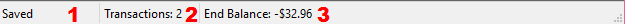

The status bar is a rectangular area at the bottom of the main window. See figure below
The status bar, as the name suggests, shows the status of the current account, and its information, like whether it is saved or not, and the starting balance.
| Part Number | Description |
|---|---|
| 1 | If the file is saved, this part says "Saved". If it is not saved, the text is "Not Saved". If it was autosaved, the text is "Autosaved". |
| 2 | Shows a count of the amount of transactions in the account. |
| 3 | Shows the ending balance; that is, the value of the "Balance" column of the last transaction. When you hover on a menu item, then this status bar part will display a brief description of the command. |